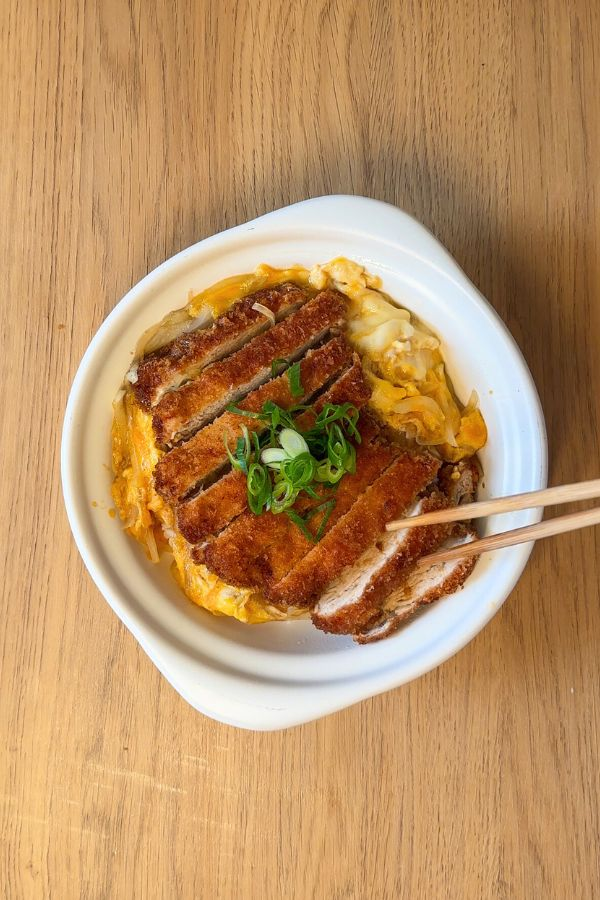
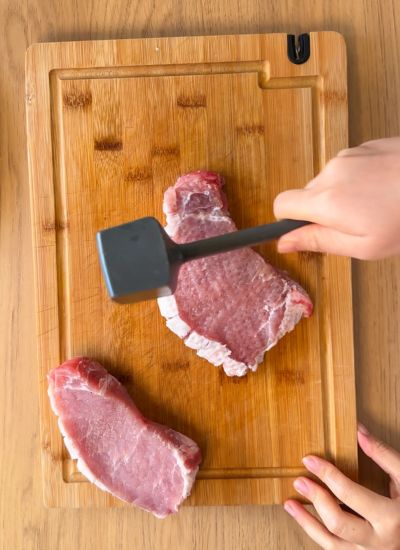
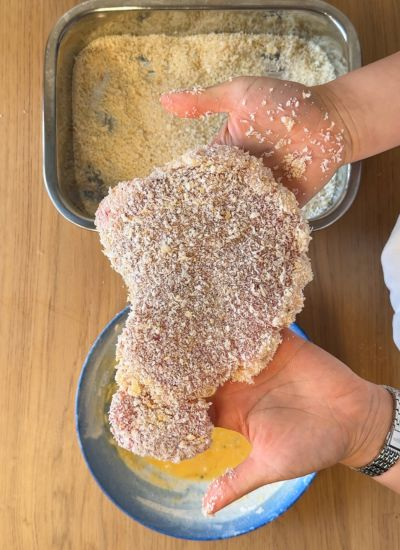
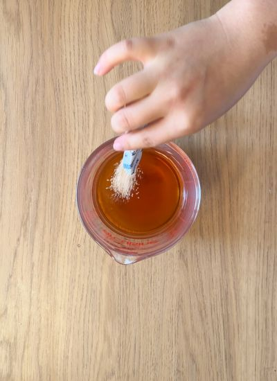
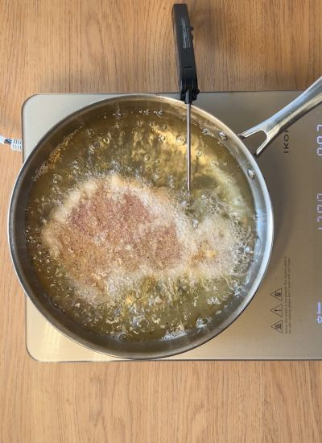
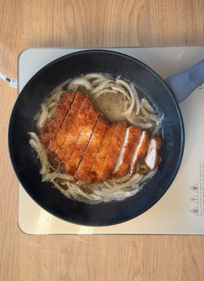
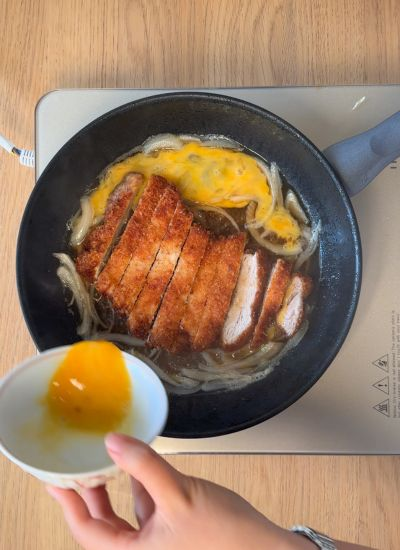

Por probar · Japonesa
← Recetas
Katsudon de Cerdo

Preparación
- Pon a cocer el arroz. Corta la cebolla fina y pica el ajo tierno. Seca el lomo, haz cortes poco profundos en la grasa lateral y aplánalo con un mazo.

- Salpimienta. Reboza: pasa por la mezcla de huevo + harina y luego por panko hasta cubrir.

- Salsa: mezcla el agua, soja, azúcar y dashi; calienta en microondas 2 min y remueve.

- Fríe el tonkatsu en aceite a 180 °C, dándole vueltas, ~5 min hasta dorar. Escurre en papel.

- Por ración: cocina la mitad de la salsa con la mitad de la cebolla hasta que ablande.

- Corta un tonkatsu en tiras, añádelo con 1 huevo batido, tapa y cocina 30-60 s. Sirve sobre el arroz con ajo tierno. Repite para la 2ª ración.
